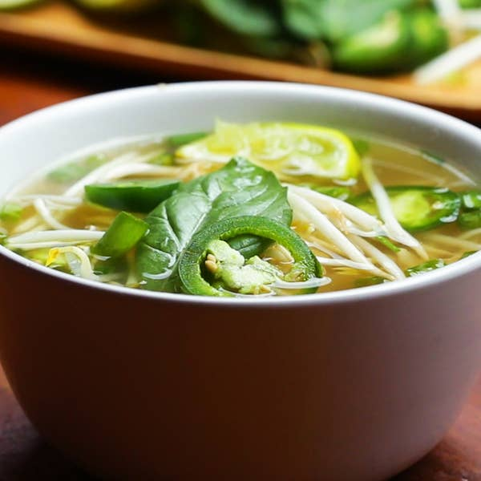

Pho

Description
Authentic Vietnamese pho is amazing but you don't always have the time to make the real thing. When you are in a pinch try this quick 30-minute chicken "pho". Make sure to add your favorite toppings like bean sprouts, jalapenos, thai basil, and don't forget a squeeze of fresh lime.
Ingredients
- 10oz rice noodle, dried, narrow, flat
- warm water, for soaking
- 1 tbsp. whole black peppercorn
- 1 tbsp. coriander seed
- 4 pods whole star anise
- 1 piece fresh ginger (2 inches)
- 1 bunch green onion
- 4 c. hot water
- 8 c. bhicken broth
- 1 lb. chicken breast, halved crosswise
- 1/4 c. fish sauce
For serving:
- 2 limes
- 1 jalepeno
- 1 bean sprout
- 1 bunch fresh thai basil
- sriracha
- hoisin sauce
Steps
- Place the rice noodles in a large heatproof bowl. Cover with warm water and soak for 20 minutes, until softened.
- While the noodles are soaking, heat a large pot over medium-high heat. Toast the black peppercorns, coriander seeds, and star anise pods for 2 minutes, until fragrant.
- While the seeds are toasting, peel the ginger and cut into pieces. Trim the ends off the green onions, then chop 5 inches off the bases and save the remaining green tops for later.
- Add the ginger and green onion bases to the pot and cook for 2 minutes, or until fragrant.
- Add the water, chicken broth, and chicken breasts. Increase the heat to high, cover, and bring to a simmer. Cook for 5 more minutes, then check the chicken every minute until cooked through. Remove from the heat.
- While the broth heats up, thinly slice the green onion tops. Cut the lime into wedges. Thinly slice the jalapeño.
- After 20 minutes of soaking, drain the rice noodles, then return to the bowl.
- Remove the chicken from the broth.
- Strain the broth over the noodles. Pour the noodles and broth back into the pot over high heat, then add the fish sauce. Cover and cook for 3 minutes.
- Shred the chicken.
- Divide the noodles between four serving bowls and top with the shredded chicken, jalapeño, bean sprouts, and Thai basil. Ladle the hot pho broth over the noodles. Add a squeeze of lime, green onions, and any other favorite toppings.
- Enjoy!